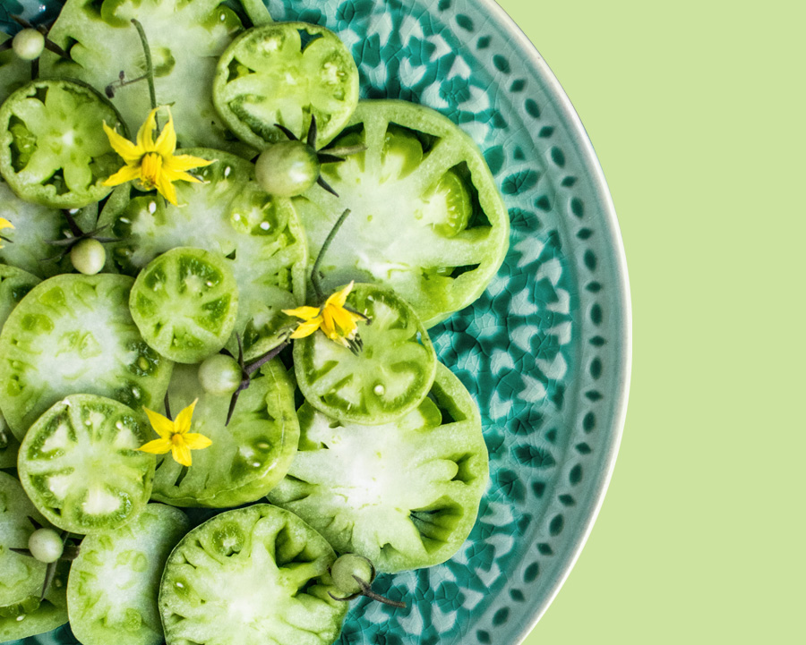
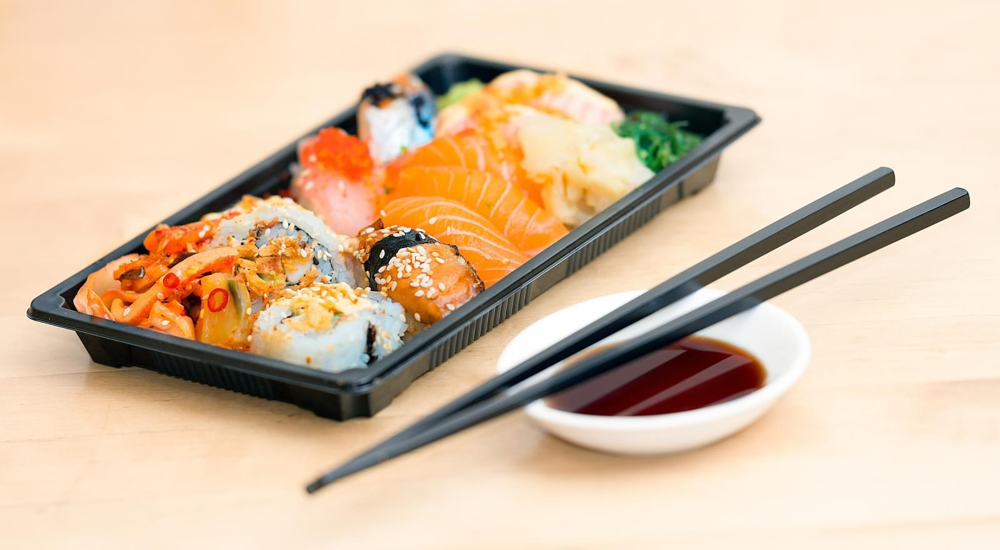
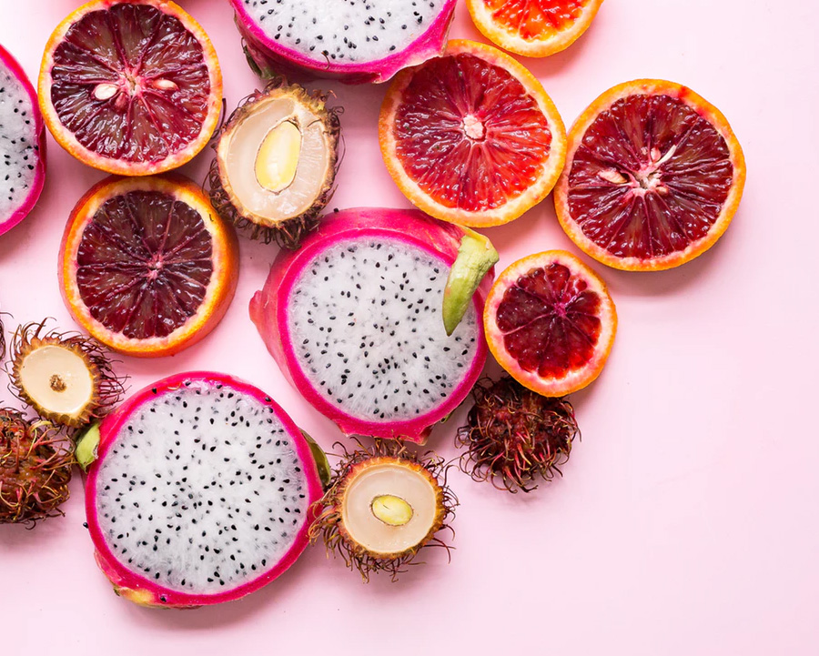

Keep healthy food readily available. When you get hungry, you're more likely to eat the first thing you see on the counter or in the cupboard. Keep healthy food in easily accessible and visible places in your home and workplace.Put some fruits in a basket and place it on the kitchen counter.

Salads
It's often forgotten that fruits are incredibly filling. Because of
their fiber and water ontents and the extensive chewing involved in
eating them, fruits are very satiating.
The satiety index is a measure
of how much different foods contribute to feelings of fullness.
Not surprisingly, these men lost significant amounts of weight. Those
who were overweight lost even more than those who were at a healthy
weight.
Overall, given the strong effects that fruits can have on
satiety, it seems beneficial to replace other foods, especially junk
foods, with fruit to help you lose weight over the long term.
One highlight is the restaurant's main sushi counter singularly carved from the trunk of a 220-year-old Japanese cypress or hinoki tree. Hinoki timber is highly revered in much of traditional Japanese architecture. At Shinji by Restaurant, it sets the stage for Master Chef and his team to demonstrate an artistry that dates back thousands of years.

Asian
If you've been to a grocery store's dairy aisle lately, you've probably picked up on the fact that Greek yogurt is becoming pretty darn popular. At Greatist, we think this stardom is well earned: We consider the stuff a superfood thanks to its high protein and probiotic content
But frankly, we're getting a little sick of the classic Greek yogurt and granola combo that's been a staple of our breakfasts since who-knows-when. So we've rounded up 51 healthy recipes from around the web that use Greek yogurt in surprising, delicious ways — and not just for breakfast (okay, we've got some breakfast recipes too — but we guarantee that they're equally surprising).
Have a container of plain or Greek yogurt sitting in your fridge? You may want to give it a closer look. Believe it or not, yogurt isn't just a breakfast food—it can be a delicious addition to your appetizers, main courses, and desserts. Follow these recipes to learn how you can make the most of your yogurt, from whipping up sweet treats like healthy yogurt.
Yogurt
It’s often forgotten that fruits are incredibly filling. Because of their fiber and water contents and the extensive chewing involved in eating them, fruits are very satiating.
The satiety index is a measure of how much different foods contribute to feelings of fullness.
Not surprisingly, these men lost significant amounts of weight. Those who were overweight lost even more than those who were at a healthy weight.
Overall, given the strong effects that fruits can have on satiety, it seems beneficial to replace other foods, especially junk foods, with fruit to help you lose weight over the long term.
Everyone knows that fruits are healthy — they are real, whole foods. Most of them are also very convenient. Some people call them "nature's fast food" because they are so easy to carry and prepare. However, fruits are relatively high in sugar compared to other whole foods.

Fruits